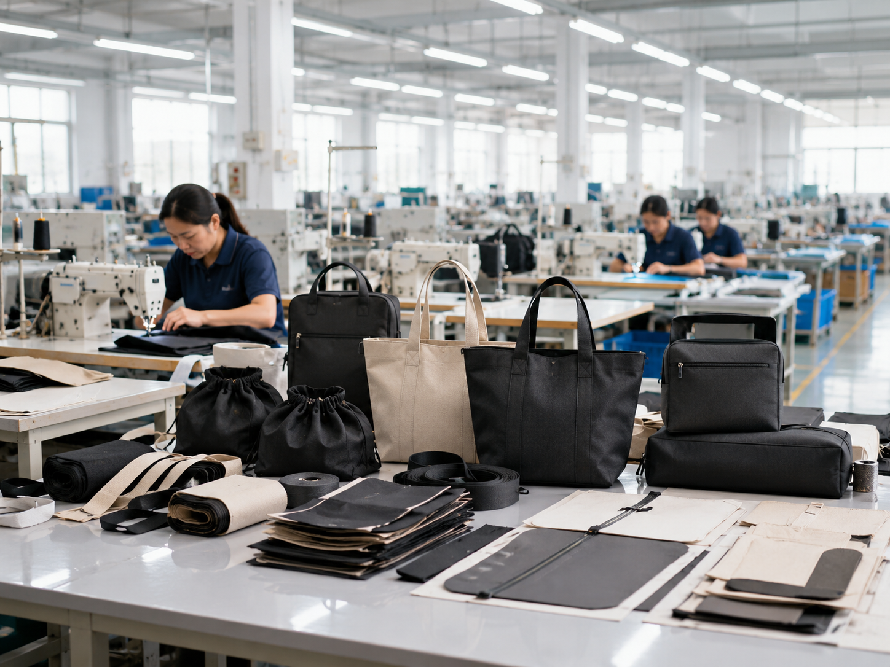

Check whether the supplier regularly makes your target bag category.
Manufacturer Guide
How To Choose A Custom Bag Manufacturer
Use this guide to compare custom bag suppliers more clearly before starting sample development or placing an OEM order.

Confirm sample flow, revision support and material suggestions.
Review how the factory checks size, stitching, logo and packing.
Choose clear, structured communication over vague fast replies.
01
Check Category Experience First
A good manufacturer should have experience with the kind of bag you want to produce. Cosmetic bags, cooler bags, sports bags and card binders require different materials, structures and production details.
- Ask for similar product experience.
- Check whether the factory understands your target market.
- Confirm whether they can support OEM or ODM customization.
02
Compare Sample Development Support
Sampling is where most custom bag problems are discovered. A factory that can explain materials, logo methods and structure details early will reduce rework later.
- Confirm sample lead time and revision process.
- Share size, material, color and logo requirements.
- Use the approved sample as the bulk production standard.
03
Review Quality Control Process
Quality control should cover more than final appearance. It should include material, measurements, stitching, logo placement, function and packing.
- Check material and accessory consistency.
- Review stitching, handle strength and zipper function.
- Confirm packing details before shipment.
04
Evaluate Communication And Export Support
For international buyers, clear communication is part of production quality. A good supplier should explain options, risks, MOQ, lead time and packing clearly.
- Look for clear answers rather than short generic replies.
- Confirm payment, packing and delivery details.
- Check whether the supplier can support long-term repeat orders.
Factory Selection
Choose A Supplier That Reduces Project Risk
The right manufacturer helps you clarify requirements before sampling, not after problems appear.
- Relevant bag category experience
- Clear sample and revision flow
- Practical material advice
- Stable QC and packing support

Quick Summary
A Strong Manufacturer Makes The Project Easier
The best supplier is not always the cheapest. It is the one that helps you move from idea to sample and bulk production with fewer surprises.
They understand your product category and required structure.
They guide sampling, production and quality control clearly.
They communicate practical details before problems happen.
Need Project Support?
Need Help Preparing A Factory Inquiry?
Send your bag type, target size, material idea and logo requirement. We can review your project direction before quotation.